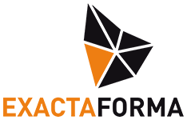
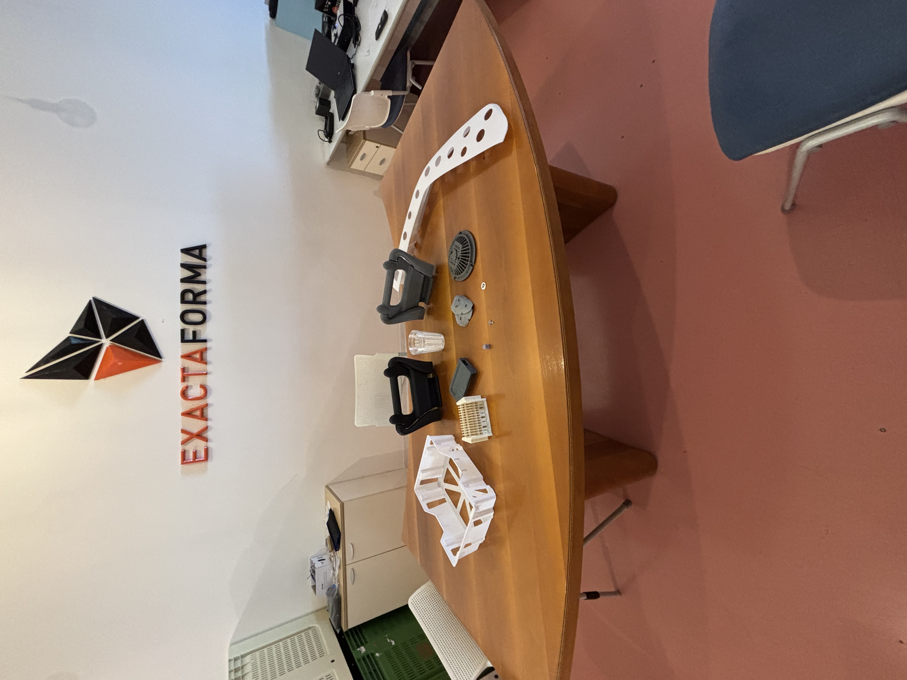

FSL
La mia prima esperienza in un ambiente lavorativo
ExactaForma S.r.l
Durante questo ultimo periodo ho svolto un’esperienza di alternanza scuola-lavoro, presso ExactaForma s.r.l situata a Belvedere Ostrense, che mi ha fatto capire più da vicino cosa sia realmente il mondo del lavoro e mi ha aiutato a ragionare più attentamente sulla scelta che dovrò in futuro compiere: continuare il percorso di studi all’università, oppure quello di terminarlo andando in una azienda?

Stagista (in formazione)
Scansione 3DDurante l'FSL ho ricoperto il ruolo di Stagista all'interno dell'azienda. Mi sono affiancato per le prime settimane a un dipendente parecchio esperto nel settore, che ha fatto da tutor aziendale, e successivamente, visto le piccole dimensioni dell'azienda, sono stato a svolgere le mansioni da solo.
Cosa ho fatto
Scansione 3D
Utilizzo dello scanner 3D. Questo strumento viene spesso usato dall’azienda con lo scopo di riuscire
a “catturare” un oggetto fisico e replicarlo esattamente in tutti i suoi dettagli all’interno del
computer tramite un apposito programma. Di questi scanner ce ne sono 2 in particolare:
• uno manuale dove bisogna mettere l’oggetto al centro di una tavola piena di marker che
hanno il compito di aiutare la scansione che si ottiene girando attorno al pezzo con lo
scanner. Questo tipo di lavoro viene usato per pezzi più grandi e meno complessi.
• uno automatico che veniva invece usato per pezzi più piccoli e complessi. In questo caso
bisogna posizionare il pezzo al centro di una piattaforma roteante e bisogna puntare lo
scanner fisso verso il pezzo, si avvia il programma e bisognava attendere che lo scanner
finisca la scansione per continuare
Fusion
Utilizzo di Fusion, il qualeun ambiente simile ad Inventor, già usato nel biennio del mio percorso di studi, che viene usato per la realizzazione di oggetti destinati ad essere stampati nella stampante 3D.
Rihinoceros 3D
Utilizzo di Rihinoceros 3D, un programma che ha lo stesso scopo di Fusion ma molto più professionale.
Soft skills
Durante questo periodo di alternanza penso di aver acquisito alcuni importanti competenze fondamentali
per il mondo del lavoro come:
• Problem Solving, cioè la capacità di risolvere problemi; infatti quando riscontravo un problema
prima provavo a risolverlo da solo e poi in caso non ci fossi riuscito avrei chiamato il mio tutor.
• Competenze tecniche specifiche nominate in precedenza.

Questa esperienza ha avuto diversi aspetti positivi che già ho nominato in precedenza come l’acquisizione di nuove competenze, la possibilità di conoscere e di rendersi conto di frequentare un ambiente di lavoro reale, e il confronto con persone con esperienza nel settore. In conclusione ritengo che questa esperienza si sia rivelata molto utile in quanto mi ha permesso di sviluppare competenze in precedenza citate.